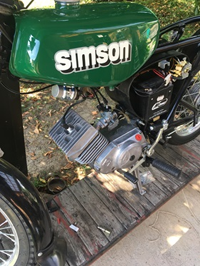

A műszaki dolgok iránti érdeklődésemet a legjobban az tükrözi, hogy gépészmérnök szakra mentem, és szabadidőmben az egyik Barátommal, aki autószerelőnek tanul, szoktunk robogókat szerelni/ összerakni.
A későbbiekben ezt a tudásomat is szeretném kamatoztatni, mivel ez irányba szeretnék továbbmenni a tanulmányaim során. Autókkal és egyéb gépek tervezésével szeretnék foglalkozni.
Ha ez megvalósul, akkor a hobbim és a munkám is egyaránt ugyanaz lenne.